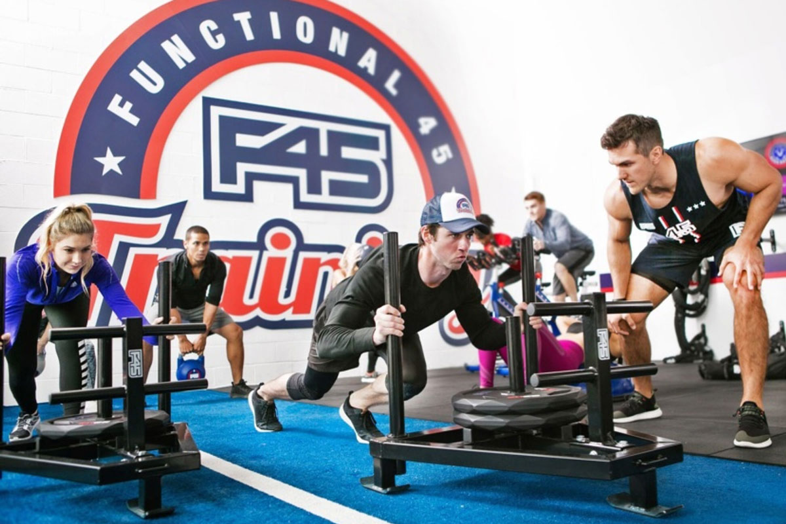

<!DOCTYPE html>
<html>
<head>

    <meta charset="utf-8" />
    <title>F45 Orchard</title>

</head>

<style>
Body {
	background-image: url("background.jpg");


}
</style>

<style>

a:link, a:visited {
	background-color:lightblue;
	color: purple;
	padding: 10px 20px;
	text-align: justify
	text-decoration: none;
	display: inline-block;
}

a:hover, a:active {
	background-color: pink;
}

</style>


<style>
P{margin:auto;width:800px;}
P span{text-align: justify;}
</style>

<style>
#myHeader {
	background-color: DodgerBlue;
	color: darkblue;	
	padding: 10px;
	text-align: center;
	Font-size:50px;

} 
</style>


<body>
    <nav>
        <a href="Index.html">Home</a> |
        <a href="trainings.html">Facilities</a> |
        <a href="contactus.html">Contact us</a> |
    </nav>


<h1 id="myHeader">Welcome to F45 Training Center !</h1> 

<p style="text-align:center;font-size:25px;border: 3px solid blue;padding: 30px;">

F45 is based in Australia which has the fastest growing franchise with 570 studios in Australia and 1330 F45 studios in 33 countries around the world, including 14 studios based in <mark><I><b>Singapore</b></I></mark>. Since the 1st opening of F45 in 2012 in Sydney, it has gathered more than 300,000 active members from around the world. F45 is one of the most ideal/popular gyms for working adults. </p> 

<h1 style="text-align:center;font-size:30px;text-shadow: 0 0 3px #FF0000"> WHAT IS F45? </H1>


<p style="text-align:center;font-size:25px;border: 3px solid blue;padding: 30px;"> F45 is a 45-minute workout that keeps celebrities such as Hugh Jackman fit.It combines elements of high-intensity interval training commonly known as <b> <u><I>HIIT</b></u></I>. F in F45 represents functional training on top of circuit trainings.A class includes 45-second workout periods, with 15-second breaks. There are over 2,700 exercises and 36 workouts in F45, making it impossible for participants to take the same class twice! Working adults can enjoy exercise routine within 45 minutes and F45 allows booking of classes at suitable timings. </p>


<h1 style="text-align: center;color:darkblue;"> <I><u> F45 Around the World</I></u></h1>

<p style=" text-align: center; font-size:20px;">Participants will be able to experience different types of intensity in various workouts given and shown by professionals in all F45 studios. Prior to the start of each session, instructors will be there to guide each and every member on the actual expected movements of the exercise, to ensure <mark>zero injuries</mark>.  </p>


<figure>

<style>
img {
  display: block;
  margin-left: auto;
  margin-right: auto;
}
</style>


  
<figcaption style= "text-align: center;"> Fig 1.0 - The exercise workout can be done both by the male and female participant </figcaption>

</figure>


<p style=" text-align: center; font-size:20px;"> Males and Females can attend the same class doing the same workout but at a different weight category. Lessons are prepared and given to each and every member depending on their own preferences and capabilities. Instructors will be there to support and motivate everyone when participants start their workouts. </p> 


<figure>


<style>
img {
  display: block;
  margin-left: auto;
  margin-right: auto;
}
</style>


  
<figcaption style= "text-align: center;"> Fig 1.1 - Ladies are also capable of training with weights without looking over big-sized </figcaption>

</figure>


<p style=" text-align: center; font-size:20px;"> A screen is place in each workout stations, without the help from gym instructors, the screen will showcase each exercises that is needed for each station. A timer will also be provided to ensure that participants completes the full <strong> 45s set of exercise followed by 15s of rest time </strong> before moving on. </p> 

<figure>

<style>
img {
  display: block;
  margin-left: auto;
  margin-right: auto;
}
</style>


  
<figcaption style= "text-align: center;"> Fig 1.2 - TV screens to show each exercise needed for the particular workout station </figcaption>

</figure>


<h2 style="text-align:center;font-size:30px;text-shadow: 0 0 3px #FF0000;">
Comments Given By Participants </h2>

<p style= "text-align:center;" > <u> <i> Comments taken from various webpage </i> </u></p>

<blockquote cite="https://www.urbanjourney.com/workout-wellness/events-happenings-f45-singapore/; style= "text-align:center;" >

<style="text-align: center; ">"The workouts are tons of fun with great music and a range of exercises that could include jumping, squatting, twisting, kicking and lifting." 
<br> </br>
"The endorphins definitely kick in during each session"
<br> </br>
"We also love how convenient it is. You just head straight in, do your workout, shower and head out the door, all in about an hour." 
<br> </br>
"The instructors are super friendly and charismatic, and they make it their mission to keep you motivated and striving for your best."

</blockquote>


</body>
</html>